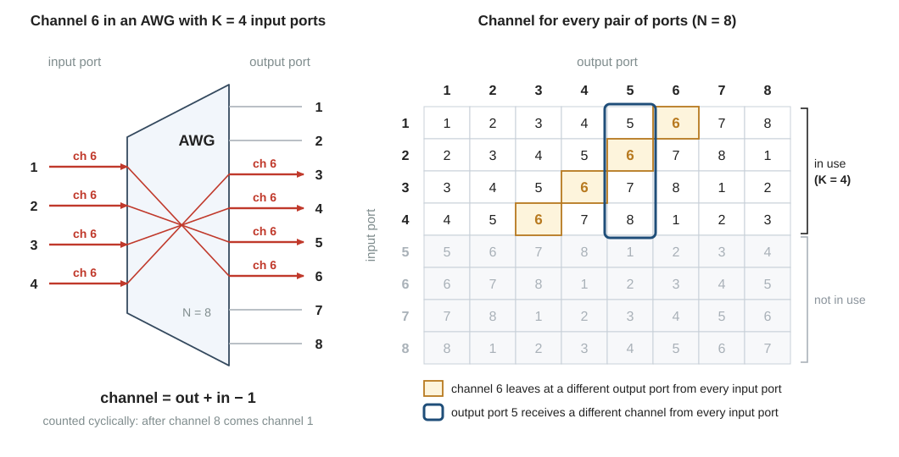
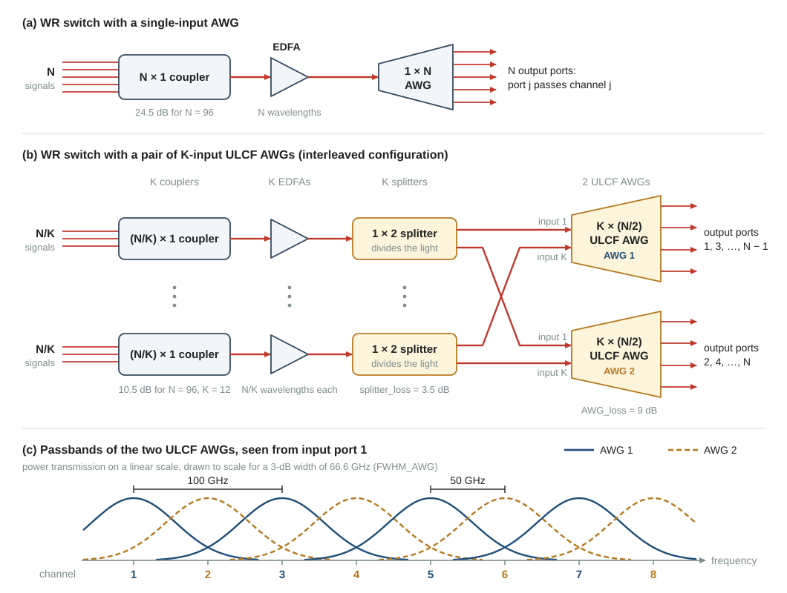
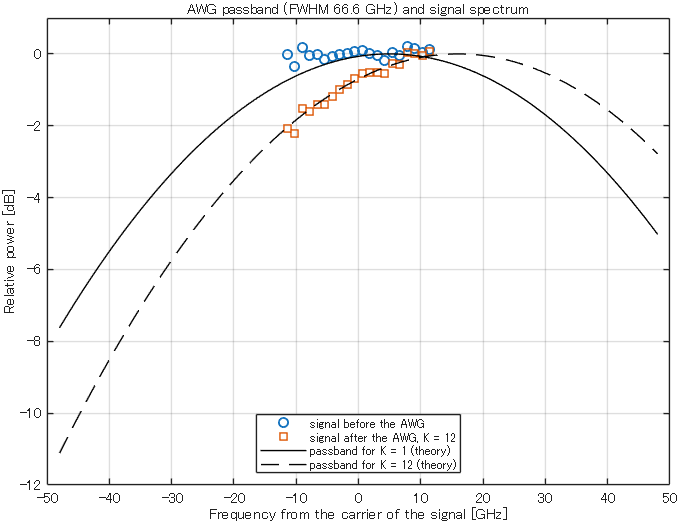

Background
17AWG and wavelength routing
In a wavelength-routing (WR) switch nothing is switched: the wavelength of a signal decides at which output port it leaves. The element that does this is the arrayed-waveguide grating (AWG). This page explains its passband, the routing rule of an AWG with several input ports, and the AWG of this research, the ULCF AWG in the interleaved configuration. It shows what \(K\) input ports gain and what they cost.
matlab/demos/demo17_awg_wavelength_routing.mLibrary: awg, gaussfilter, awg_channel, ULCF_dev_freq, coupler_loss1. Why you need this
Every switch in this research contains one stage of WR switches, and the proposal changes exactly this stage. The "low-loss wavelength routing" in the title of your research is an AWG with \(K\) input ports. It lets \(K\) small couplers replace the one large coupler in front of the EDFA, the optical amplifier. Page 15 showed why this matters: a loss before the EDFA lowers the SNR by the same number of dB.
The same AWG has a second property. The wavelength that reaches one of its output ports depends on the input port of the signal. In the two-stage switch (page 21) this is only a rule for tuning the lasers. In the proposed three-stage switch it decides which leaks have the wavelength of the target signal (page 23). To use both properties you need the routing rule of the AWG. To judge their price you need its passband, its loss and its crosstalk.
An AWG with \(K\) input ports removes loss before the EDFA and adds loss after the EDFA, where it does little harm. The price is \(K\) EDFAs in place of one, a passband that is not centered on the signal, and up to \(K-1\) leaks on the wavelength of the signal.
The facts about the AWGs come from the JOCN paper. The values of the conventional three-stage switch come from the JLT paper. The JOCN paper writes \(n\) for the number of input ports of the AWG; these pages write \(K\) (ULCF_deg in the code).
- Nagai et al., "Design and Verification of Large-Scale Optical Circuit Switch Using ULCF AWGs for Datacenter Application," J. Opt. Commun. Netw., 2018
- Mitsuya et al., "Three-Stage Optical Circuit Switch Architectures for Intra-Datacenter Networking," J. Lightw. Technol., vol. 43, no. 2, pp. 400-407, 2025 (doi 10.1109/JLT.2024.3465208)
2. Wavelength channels and the AWG
Wavelength channels
Signals with different laser frequencies can share one fiber and can be separated again. This is called wavelength-division multiplexing (WDM). Each laser frequency that a system uses is one wavelength channel. Frequency and wavelength describe the same light (wavelength = speed of light / frequency), so the two words are used side by side. The frequencies lie on a fixed grid: on the 50-GHz grid, neighboring channels are 50 GHz apart.
Both papers use \(N = 96\) channels on the 50-GHz grid in the full C band. The C band is the wavelength range that an EDFA amplifies. The AWGs that were built for the JOCN paper cover 191.500 THz to 196.250 THz, which are the wavelengths 1565.5 nm to 1527.6 nm: (196.250 - 191.500)/0.050 + 1 = 96 channels. These pages number the channels 1 to \(N\) (N = 96 in the scripts).
Every transmitter has a tunable laser, a laser that can be set to any of the \(N\) channels. The letters TL in the name of the transmitter function TL_QAM stand for it.
The simulation holds only one channel, the channel of the target signal. Its frequency axis is measured from the carrier of this signal: 0 Hz is the laser frequency of the target signal (page 13). The neighboring channels would lie at +50 GHz and -50 GHz.
The AWG separates the channels
An arrayed-waveguide grating (AWG) is a passive optical element that separates wavelengths. In its basic form it has one input port and \(N\) output ports, and light on channel \(j\) leaves at output port \(j\). Such an element is called a wavelength demultiplexer.
An output port does not pass one exact frequency. It passes a range of frequencies, its passband. This package models the passband as a Gaussian curve. At the frequency \(f\), the output port passes the fraction \(T(f)\) of the power:
Here \(f_c\) is the center of the passband, and \(W\) is its full width at half maximum (FWHM), also called the 3-dB width: at \(f - f_c = \pm W/2\) the fraction is exactly 1/2. In dB, with \(\Delta f = f - f_c\):
Example for \(W\) = 66.6 GHz: the passband removes 0.04 dB at a distance of 4 GHz from its center, 0.69 dB at 16 GHz and 2.13 dB at 28 GHz.
An AWG causes two losses, and you must keep them apart.
- The insertion loss is the loss at the center of the passband. It is the same for all frequencies. The scripts use 6 dB for the AWG of the conventional three-stage switch (
AWG_lossinstep22_three_stage_one_point, value of the JLT paper) and 9 dB for the AWG of the two-stage ULCF switch (AWG_lossinstep21_two_stage_one_point, section 4). - The loss from the shape of the passband depends on where the signal lies. If the carrier is not at the center of the passband, the signal lies on the slope of the curve and loses more.
A signal with the symbol rate \(B\) (baudrate) and roll-off 0 has a flat spectrum from \(-B/2\) to \(+B/2\) around its carrier (page 13). Measure \(f\) from the carrier, so that \(f_c\) is the distance of the passband center from the carrier. The signal then keeps the mean of \(T\) over its band, and the loss from the shape is
For a 24-GBd signal (\(B\) = 24 GHz) and \(W\) = 66.6 GHz, Eq. (3) gives 0.13 dB for \(f_c = 0\) and 0.78 dB for \(f_c\) = 16 GHz. The demo calculates these numbers and measures them on a simulated signal.
The slope also tilts the spectrum of the signal: one edge of the signal loses more than the other. The adaptive equalizer of the receiver (page 14) removes the tilt.
In the code
The function awg applies both losses to a signal. It multiplies the spectrum of the signal by a Gaussian mask, which the function gaussfilter builds on the frequency axis of the simulation, and then applies the insertion loss with attenuation.
signal_output = awg(signal_input, loss, shift, Fs, FWHM, er_dB, m)| Argument | Meaning | step21 | step22 |
|---|---|---|---|
signal_input | optical field, one signal per column, in \(\sqrt{\mathrm{W}}\) | signal | signal |
loss | insertion loss at the center of the passband [dB] | AWG_loss + splitter_loss = 12.5 | AWG_loss = 6 |
shift | \(f_c\): center of the passband, measured from the carrier [Hz]; 0 = passband centered on the signal | 12.5e9 + ULCF_dev_freq(ULCF_deg) | 0 |
Fs | sampling rate \(F_s\) [Hz] | 48e9 | 64e9 |
FWHM | \(W\): 3-dB width of the passband [Hz] | FWHM_AWG = 66.6e9 | FWHM_AWG = 50e9 |
er_dB | floor of the passband shape [dB]: \(T\) never falls below -er_dB | AWG_XT = 32 | AWG_XT = 32 |
m | order of the shape; 1 = the Gaussian curve of Eq. (1) | 1 | 1 |
gaussfilter(N, shift, Fs, FWHM, er_dB, m)has the last five arguments ofawg. Its first argumentNis the number of samples here, not the number of channels. It returns the amplitude mask, which is the square root of \(T\) in Eq. (1), because a power ratio acts on the field as its square root (page 12).- With the values of both scripts, the floor lies outside the simulated band, so
er_dBdoes not change the result. For 66.6 GHz and 32 dB the floor starts 108.6 GHz from the center of the passband. The value ofAWG_XTmatters only in block [7] ofstep21, where it is the level of the AWG crosstalk (section 5). - The mask covers only the simulated band, which is \(F_s\) wide: from -24 GHz to +24 GHz in
step21. The center of the passband can lie outside this band. Instep21it is 28.5 GHz from the carrier for \(K = 12\) (section 4). This does no harm, because the mask is needed only where the signal is. - The two passband widths are values of the laboratory code. The JLT paper does not state the width of its AWG. For the ULCF AWG that was built, the JOCN paper reports a 3-dB width of about 65 GHz.
awgmakes no crosstalk. The main scripts add crosstalk as separate signals (section 5).
After setup_path you can try the function in the Command Window:
Fs = 2*24e9; % up = 2, baudrate = 24e9
Hrcos = rcosfilter(3e4*2, 24e9, Fs, 0); % transmit mask, roll-off 0
x = TL_QAM(3e4, 2, Hrcos, 0, 5); % 32QAM signal with 0 dBm
y = awg(x, 12.5, 16e9, Fs, 66.6e9, 32, 1); % passband center 16 GHz above the carrier
calc_signal_power(y) % about -13.28 dBm = -(12.5 + 0.78)3. The wavelength-routing switch and cyclic routing
One coupler, one EDFA, one AWG
A WR switch of size \(N \times N\) has three parts in a row (Fig. 2(a) in section 4): an \(N \times 1\) coupler, which is called the aggregation coupler, an EDFA, and a \(1 \times N\) AWG. The coupler adds up to \(N\) signals into one fiber. The EDFA amplifies them together. The AWG sends channel \(j\) to output port \(j\).
The transmitter therefore chooses the output port by choosing its wavelength. To reach the receiver at output port \(j\), it tunes its laser to channel \(j\). Two signals on the same channel never enter the same coupler, because they would go to the same receiver.
One EDFA serves \(N\) signals, so the switch needs only \(1/N\) EDFA per port. The weak point is the \(N \times 1\) coupler in front of the EDFA: coupler_loss(96) = 24.5 dB (page 12).
An AWG with several input ports
An AWG can have more than one input port. From input port 1, output port \(j\) receives channel \(j\), as before. From the next input port, every output port receives the next channel. In general, a signal that enters at input port \(a\) leaves at output port \(j\) only if it is on the channel
In words: channel = out + in − 1, counted cyclically. The operation \(x \bmod N\) is the remainder when \(x\) is divided by \(N\) (mod(x, N) in MATLAB). After channel \(N\) comes channel 1 again, and the word cyclic names this return. Equation (4) is the rule that Fig. 4 of the JOCN paper writes at the output ports of its WR switch (the paper writes \(\alpha\) for \(a - 1\)). Figure 1 shows the rule for a small AWG with \(N = 8\).

Read the table of Fig. 1 in three ways.
- Along a row (one input port). The \(N\) output ports have \(N\) different channels. From every input port, a transmitter can still reach every output port. It only has to use the right channel.
- Along a column (one output port). The channels from different input ports are all different. The wavelength that arrives at an output port tells through which input port the signal came.
- One channel (amber cells). From different input ports, the same channel leaves at different output ports. Signals on the same channel can therefore pass the AWG at the same time, one at each input port, and they do not meet.
In the code. The function awg_channel(in_port, out_port, N) returns the channel of Eq. (4). The ports can be arrays: a column of input ports and a row of output ports give the whole table.
awg_channel(1, 5, 96) % 5: from input port 1, output port j receives channel j
awg_channel(3, 5, 96) % 7 = 5 + 3 - 1
awg_channel(3, 96, 96) % 2: channel 98 becomes channel 2
awg_channel((1:4).', 1:8, 8) % rows 1 to 4 of the table in Fig. 1The rule read backwards gives the output port: out_port = mod(ch - in_port, N) + 1. The four given scripts of the folder main do not call awg_channel. They simulate one signal on its own wavelength and need no channel numbers. The function is a tool for your own work (matlab/work/work1_wavelength_rule.m).
Which port has the number 1, and in which direction the channels shift, are conventions. The size of the shift is not a convention: it is a property of the device. The examples in the JOCN paper do not all follow Eq. (4). In its Fig. 2, a 4 x 4 ULCF AWG, the channel number falls by one from one input port to the next. In its Fig. 3, an 8 x 8 WR switch with a pair of AWGs (the configuration of section 4), it falls by two. The three properties above hold in all these cases. These pages and awg_channel use Eq. (4). If a result of your work depends on the exact rule of a device, settle the rule with your supervisor first.
Consequence 1: \(K\) small couplers replace the large one
Signals at different input ports do not meet, even on the same channel. The \(N\) inputs of the WR switch therefore do not have to pass one coupler. They are divided into \(K\) groups of \(N/K\) inputs. Each group has its own \((N/K) \times 1\) coupler and its own EDFA, and it enters one input port of the AWG (Fig. 2(b)). In the words of the JOCN paper, the AWG with \(K\) input ports works as a \(K \times 1\) coupler and as a \(1 \times N\) AWG at the same time.
The loss of one coupler falls from \(3.5\lceil\log_2 N\rceil\) dB to \(3.5\lceil\log_2 (N/K)\rceil\) dB (page 12; the brackets \(\lceil\ \rceil\) mean rounding up to the next integer). The loss before the EDFA drops by
| \(K\) | Coupler | Loss [dB] | Saving \(\Delta L\) [dB] | EDFAs per WR switch |
|---|---|---|---|---|
| 1 | 96 x 1 | 24.5 | 0.0 | 1 |
| 2 | 48 x 1 | 21.0 | 3.5 | 2 |
| 4 | 24 x 1 | 17.5 | 7.0 | 4 |
| 8 | 12 x 1 | 14.0 | 10.5 | 8 |
| 12 | 8 x 1 | 10.5 | 14.0 | 12 |
The last column is the price: \(K\) EDFAs for every WR switch, which is \(K/N\) EDFAs per port (Table III of the JOCN paper). Each EDFA then carries only \(N/K\) wavelengths. Page 15 shows what this means for its output power per channel.
The JOCN paper reports the gain. In its simulation, the required transmitter power falls by about \(3.5\lceil\log_2 K\rceil\) dB for the same switch size. For the rows of Table 2 this is the same number as \(\Delta L\). In its experiment with \(K = 12\), the required transmitter power fell by about 13 dB.
In the code. Block [4] of step21_two_stage_one_point chooses the coupler:
N_agg = N; % number of wavelengths on one coupler and one EDFA
if ULCF_flag == 1
N_agg = N_agg/ULCF_deg;
end
agg_coupler_loss = coupler_loss(N_agg);Consequence 2: the wavelength depends on the input port
With one input port, output port \(j\) always carries channel \(j\). With \(K\) input ports, the channel at output port \(j\) is one of \(K\) channels. Equation (4) says which one: it depends on the input port, that is, on the coupler through which the signal enters. A transmitter must know its group before it can tune its laser, and a receiver gets different wavelengths from different groups.
In the conventional three-stage switch, all signals that arrive at one third-stage switch have the same wavelength, because every AWG has one input port (page 22). With \(K\) input ports this is no longer true in general. What follows from it is the first task of your own work.
4. The ULCF AWG and the interleaved configuration
Why a special AWG is needed
An AWG that returns to channel 1 after channel \(N\) by itself, as in Eq. (4), is called a cyclic AWG. It can be used with several input ports as it is, but it has a weakness: the centers of its passbands are not exactly at the channel frequencies. The difference between the channel frequency and the real center of the passband is the passband-center deviation. In a cyclic AWG it grows with the number of input ports that are used, and for a large \(K\) it becomes unacceptable (JOCN paper). The paper compares three types of AWG (Table 3).
| Type | Wavelengths that are needed | Passband-center deviation | Typical insertion loss |
|---|---|---|---|
| Cyclic AWG | \(N\) | large | 5 dB |
| Acyclic AWG | \(N + K - 1\) | small | 5 dB |
| ULCF AWG | \(N\) | small | 9 dB |
An acyclic AWG does not return to channel 1 after channel \(N\). The channels of the higher input ports continue beyond channel \(N\), so \(K - 1\) more wavelengths are needed. The uniform-loss and cyclic-frequency (ULCF) AWG has both advantages: it needs only \(N\) wavelengths, and its deviation is small. It is built from an acyclic AWG with more output ports, and 2 x 1 couplers join these output ports in pairs, so that the channels leave cyclically. Fig. 2 of the JOCN paper shows a 4 x 4 ULCF AWG that is made from a 4 x 8 acyclic AWG.
The price is a higher insertion loss: 9 dB against 5 dB. This loss lies after the EDFA. The JOCN paper notes that it hardly changes the SNR, because the SNR is mostly decided by the power at the input of the EDFA (page 15).
A ULCF AWG still has some deviation. For the JOCN paper, a pair of 12 x 48 ULCF AWGs was built. Their worst insertion loss is 9.2 dB, and their 3-dB width is about 65 GHz. The outer input ports deviate more. The largest deviation, 16 GHz, was measured at input port 12 (Fig. 8 of the paper).
In the code. The function ULCF_dev_freq(ULCF_deg) returns the deviation of the worst input port of an AWG with \(K\) input ports, in Hz (Table 4). step21_two_stage_one_point and main_two_stage_ULCF always simulate this worst port. The values are the specification values of the ULCF AWG device in the laboratory. The 16 GHz for \(K = 12\) agrees with the largest deviation that the JOCN paper reports for its 12 x 48 ULCF AWGs. For any other \(K\) the function stops with an error.
\(K\) (ULCF_deg) | 1 | 2 | 4 | 6 | 8 | 12 | 16 |
|---|---|---|---|---|---|---|---|
| Deviation [GHz] | 5 | 5 | 8 | 11 | 12.5 | 16 | 17 |
| \(L_{\mathrm{shape}}\) [dB] | 0.19 | 0.19 | 0.29 | 0.44 | 0.53 | 0.78 | 0.87 |
The interleaved configuration
On the 50-GHz grid, a single AWG must separate neighbors that are only 50 GHz apart. Its passbands must therefore be narrow, and a deviation of 16 GHz is a large part of a narrow passband. The JOCN paper therefore divides the channels between two AWGs (Fig. 2(b)).
- A 1 × 2 splitter behind each EDFA divides the light into two equal parts. Each part holds all channels. A \(1 \times 2\) splitter is a 2 x 1 coupler that is used in the other direction, and the scripts give it the same loss:
coupler_loss(2)= 3.5 dB (page 12). - Each part goes to one of two ULCF AWGs. Each AWG has \(K\) input ports, \(N/2\) output ports and a channel spacing of 100 GHz. The passbands of the two AWGs are shifted against each other by 50 GHz (Fig. 2(c)): seen from input port 1, one AWG passes the odd-numbered channels and the other the even-numbered channels. The paper calls them interleaved.
This is the interleaved configuration. One WR switch then contains \(K\) couplers, \(K\) EDFAs, \(K\) \(1 \times 2\) splitters and one pair of \(K \times (N/2)\) ULCF AWGs. The pair as a whole routes like one AWG with \(K\) input ports and \(N\) output ports. One AWG of the pair has the odd-numbered output ports, the other has the even-numbered ones (AWG 1 and AWG 2 in Fig. 2). Which of the two AWGs routes a channel that comes from one of the input ports 2 to \(K\) depends on the size of the shift between input ports (Note in section 3).
In the JOCN paper, the element behind each EDFA is a de-interleaver: a filter with one input and two outputs that sends the odd-numbered channels to one AWG and the even-numbered channels to the other. The paper notes that a coherent receiver allows a \(1 \times 2\) splitter in its place, if its loss is acceptable. Each AWG then receives all channels and routes its own set to its output ports. This package uses the \(1 \times 2\) splitter and models only its loss. The loss has the value that the earlier laboratory code used for this element, so this choice does not change the results.

step21. Panel (b) is drawn after Fig. 4 of the JOCN paper, with 1 × 2 splitters in place of its de-interleavers.With a channel spacing of 100 GHz, each AWG can have a wider passband: about 65 GHz in the AWGs of the JOCN paper, 66.6 GHz in step21. A wider passband loses less when its center deviates. Equation (3) gives the numbers for a 24-GBd signal and a deviation of 16 GHz: 0.78 dB for \(W\) = 66.6 GHz, but 1.33 dB for \(W\) = 50 GHz, the width that step22 uses for its AWG on the 50-GHz grid.
In Fig. 2(c) the passbands of the two AWGs overlap. A passband of one AWG therefore also passes a part of the two neighboring channels, which belong to the other AWG. This light reaches the receiver together with the signal. It is on another channel, so it is out-of-band crosstalk, and the coherent receiver removes it (page 14). This is why the \(1 \times 2\) splitter needs a coherent receiver. A de-interleaver removes the neighboring channels before the AWG. The JOCN paper describes the division of work: the de-interleaver has only two outputs but a steep filter edge, and the AWG has many output ports but a gradual slope. In the simulation of that paper (its Fig. 5), a single ULCF AWG shows a power penalty from the deviation when it has 12 or more input ports. With the de-interleaver and the pair of AWGs, the penalty is suppressed.
In the code. Block [6] of step21_two_stage_one_point is the \(1 \times 2\) splitter and the AWG:
AWG_loss_temp = AWG_loss;
if ULCF_flag == 1
AWG_loss_temp = AWG_loss_temp + splitter_loss; % add the 1 x 2 splitter
end
if flg_NWDM == 0
shift = 0; % carrier on the center of the AWG passband [Hz]
else
% quasi-Nyquist WDM grid: the carrier is 12.5 GHz off the passband center.
% For the worst input port of a ULCF AWG it is dev_freq further away.
dev_freq = ULCF_dev_freq(ULCF_deg);
shift = 12.5e9 + dev_freq;
end
signal = awg(signal, AWG_loss_temp, shift, Fs, FWHM_AWG, AWG_XT, 1);- The \(1 \times 2\) splitter appears only as a flat loss. Section 1 of the script sets
splitter_loss = coupler_loss(2), which is 3.5 dB. It is added toAWG_loss= 9 dB, which gives 12.5 dB. Nothing else of the splitter is simulated, because the scripts hold only the channel of the target signal and not its neighbors. - The passband is the Gaussian curve of the AWG alone, with
FWHM_AWG= 66.6 GHz. - With
flg_NWDM = 1, the script adds 12.5 GHz to the deviation. This is a setting of the earlier study, in which the carrier is 12.5 GHz off the passband center (page 21). For \(K = 12\) the passband center is then 28.5 GHz from the carrier, and Eq. (3) gives \(L_{\mathrm{shape}}\) = 2.21 dB. Together with the flat 12.5 dB, the target signal loses 14.7 dB in block [6]. The table thatstep21prints shows it in the columnbudget (target): 7.884 dBm after the EDFA and -6.821 dBm after the AWG.
5. AWG crosstalk
An ideal AWG sends a signal only to the output port of Eq. (4). A real AWG also sends a small part of it to the other output ports. Whether this part does harm depends on its wavelength (page 16).
- AWG with one input port. All signals come from one coupler and are on different channels. Light that reaches the output port of the target signal by mistake is on another channel. It is out-of-band crosstalk, and the coherent receiver removes it (page 14). The given scripts do not simulate it.
- AWG with \(K\) input ports. Each of the other \(K - 1\) input ports can carry a signal on the channel of the target signal at the same time (the amber cells of Fig. 1). These signals belong to other output ports, but a small part of each reaches the output port of the target signal. These leaks are on the wavelength of the target signal. They are in-band crosstalk, and no filter can remove them.
The AWG crosstalk level \(\mathrm{XT}_{\mathrm{AWG}}\) (AWG_XT) says how many dB one such leak is below the signal at the same output port. The leaks carry different data, so their powers add. With \(K - 1\) leaks of equal power, the signal-to-crosstalk ratio \(\mathrm{SXR}\) (page 16) is, in dB,
step21 uses AWG_XT = 32 dB. Equation (6) then gives 32.0 dB for \(K = 2\), 27.2 dB for \(K = 4\), 23.5 dB for \(K = 8\) and 21.6 dB for \(K = 12\). This is the worst case: every other input port carries the channel of the target signal. The experiment of the JOCN paper tested the same worst case: 11 signals on the wavelength of the target signal entered the other 11 input ports of the 12 x 48 AWG. For comparison, 32QAM needs an SNR of about 17 dB at the FEC limit (page 14), so crosstalk at 21.6 dB is not negligible. The value 32 dB is a parameter of the earlier laboratory code, not a number from the JOCN paper.
In the code. awg makes no crosstalk. Block [7] of step21_two_stage_one_point adds the leaks as independent QAM signals:
Hband = nyquistfilter(datasize*up, 0, Fs, baudrate*(1+rolloff));
if ULCF_flag == 1
AWG_crosstalk = zeros(datasize*up, ULCF_deg - 1);
sigpw = calc_signal_power(apply_filter(signal, Hband, 1));
for k = 1:ULCF_deg-1
[AWG_crosstalk(:, k), ~, ~] = ...
TL_QAM(datasize, up, Hrcos, sigpw, mod_flag);
end
AWG_crosstalk = attenuation(AWG_crosstalk, AWG_XT);
AWG_crosstalk = sum(AWG_crosstalk, 2);
signal = signal + AWG_crosstalk;
endsigpw is the power inside the signal band after the AWG, in dBm. The script measures it through Hband, a rectangular mask of this band with the width baudrate*(1+rolloff). For roll-off 0, Hband is equal to the transmit mask Hrcos. Each of the ULCF_deg - 1 leaks gets this power minus AWG_XT. For its default point (\(K = 12\)), step21 prints 21.27 dB in the line crosstalk of the AWG. This is a little below the 21.6 dB of Eq. (6), for two reasons: the equalizer, which removes the tilt of the passband, raises everything that is added after the AWG by 0.27 dB, and sigpw is 0.05 dB higher than the power of the target signal alone, because it also contains the leaks of the DC switch and the ASE noise inside the signal band.
Do not mix up two kinds of in-band crosstalk (Table 5).
| AWG crosstalk (this page) | Leaks of a space switch (page 16) | |
|---|---|---|
| Where | in an AWG with several input ports, inside a WR switch | in a space switch: the DC switch of the two-stage switch, the first-stage and third-stage switches of the three-stage switch |
| Which signals leak | signals on the same channel at the other input ports of the same AWG | signals at the other input ports of the same space switch |
| Number of leaks | up to \(K - 1\) | \(M - 1\) |
| Level of one leak | \(\mathrm{XT}_{\mathrm{AWG}}\) below the signal; AWG_XT = 32 dB | \(\mathrm{ER}\) below the signal for selector + coupler, \(2\,\mathrm{ER}\) for selector + selector; dcs_ex_ratio = 36 dB, sel_ex_ratio = 35 dB |
| In the scripts | block [7] of step21; not in step22, whose AWG has one input port | block [3] of step21; blocks [3] and [7] of step22 |
The proposed three-stage switch has both kinds at the same time: AWG crosstalk in the middle stage and leaks in the third-stage switch. They have different causes, different numbers and different levels. Keep them as separate terms in your budget.
6. Run the demo
In MATLAB, make the folder matlab the current folder and run setup_path once. Then run demo17_awg_wavelength_routing. The script needs a few seconds. Every self-check must print passed.
| Section of the script | What it does | Explained in |
|---|---|---|
| 1. Parameters | Signal and AWG values of step21: baudrate = 24e9, FWHM_AWG = 66.6e9. grid_offset = 0: the passband center is off the carrier by the deviation only. K_ary = [1 2 4 8 12]. The small AWG has N_small = 8 channels and K_small = 4 input ports. | |
| 2. Passband of the AWG | Makes one signal with TL_QAM. For every \(K\), it calls awg with loss = 0 dB and shift = grid_offset + dev_freq(k), where dev_freq(k) is the value of ULCF_dev_freq for this \(K\). It measures the loss of power and compares it with Eq. (3). Self-check 1. | section 2, section 4 |
| 3. Cyclic routing table | Makes the table of Fig. 1 with awg_channel. For the connection from input port 2 to output port 5, it prints the channel and shows where the same channel leaves from every other input port. Self-check 2 tests the row property and the column property of the table. | section 3 |
| 4. Loss of the aggregation coupler | Calculates coupler_loss(N./K_ary), the saving against one \(N \times 1\) coupler and the number of EDFAs. Self-check 3 compares the saving with Eq. (5). | section 3 |
| 5. Figure | Draws the passbands for \(K = 1\) and \(K = 12\) from Eq. (2) as lines, and the spectrum of the signal before the AWG and after the AWG with \(K = 12\) as markers. One marker is the mean of nb = 1500 FFT bins. The markers exist only inside the simulated band, which is 48 GHz wide (up = 2). The lines are calculated on a wider frequency axis, f_line. | section 2 |
The script prints:
Loss of a 24-GBd signal in the AWG passband (FWHM 66.6 GHz)
K deviation [GHz] loss, simulation [dB] loss, theory [dB]
1 5.0 0.191 0.193
2 5.0 0.191 0.193
4 8.0 0.289 0.292
8 12.5 0.523 0.528
12 16.0 0.776 0.783
Self-check 1 passed: simulated loss = Gaussian formula within 0.05 dB
Routing table: N = 8 channels, K = 4 input ports
(row = input port, column = output port, entry = channel)
1 2 3 4 5 6 7 8
2 3 4 5 6 7 8 1
3 4 5 6 7 8 1 2
4 5 6 7 8 1 2 3
Example: input port 2 -> output port 5 uses channel 6
channel 6 from input port 1 leaves at output port 6
channel 6 from input port 2 leaves at output port 5
channel 6 from input port 3 leaves at output port 4
channel 6 from input port 4 leaves at output port 3
Self-check 2 passed: each channel once per row, at most once per column
Aggregation coupler before the EDFA (N = 96 wavelength channels)
K coupler loss [dB] saving [dB] EDFAs
1 96 x 1 24.5 0.0 1
2 48 x 1 21.0 3.5 2
4 24 x 1 17.5 7.0 4
8 12 x 1 14.0 10.5 8
12 8 x 1 10.5 14.0 12
Self-check 3 passed: saving = 3.5 dB x (number of saved coupler stages)
How to read Fig. 3: the circles are flat between -12 GHz and +12 GHz, the band of the 24-GBd signal. The squares follow the dashed line. At the lower edge of the signal the passband removes about 2 dB, at the upper edge almost nothing. The mean over the band is the 0.78 dB of the first printed table. The markers scatter around the lines by up to about 0.3 dB, because the data are random.
- All three self-checks print
passed, and your figure looks like Fig. 3. - You can calculate by hand one channel of the routing table with Eq. (4), and the coupler loss for \(K = 12\) from its 96/12 = 8 inputs.
- You can explain why the loss in the first table rises with \(K\) and the loss in the third table falls.
Change one parameter at a time in section 1 of the script. Predict the result before you run it.
- Set
grid_offset = 12.5e9, the setting ofstep21. Predict the loss for \(K = 12\) with Eq. (2) at the carrier. - Set
grid_offsetback to 0 and setFWHM_AWG = 50e9, the passband of a single AWG on the 50-GHz grid. By how much does the loss for \(K = 12\) rise? - Set
FWHM_AWGback to66.6e9and setK_ary = [1 2 4 6 8 12 16]. Which values of \(K\) cost more EDFAs than a smaller \(K\) without saving any coupler loss?
Results of the three experiments
- The passband center is 12.5 + 16 = 28.5 GHz from the carrier. Equation (2) gives 3.01 × (57/66.6)² = 2.2 dB. For \(K = 12\) the script prints 2.193 dB (simulation) and 2.205 dB (theory); for \(K = 1\) it prints 0.904 dB (simulation). The value 2.205 dB is the \(L_{\mathrm{shape}}\) of
step21in section 4. Equation (2) at the carrier is only an estimate of \(L_{\mathrm{shape}}\): here the two agree, and in check question 3 they differ by 0.09 dB. - The loss for \(K = 12\) rises from 0.776 dB to 1.322 dB (theory: 1.334 dB). A narrow passband makes the same deviation more expensive. This is why the interleaved configuration uses wide passbands.
- \(K = 8\) gives a 12 x 1 coupler, which has 14.0 dB like the 16 x 1 coupler of \(K = 6\). \(K = 16\) gives a 6 x 1 coupler, which has 10.5 dB like the 8 x 1 coupler of \(K = 12\). The loss of a coupler is counted in whole stages, and the number of stages is rounded up (page 12). In coupler loss, \(K = 8\) and \(K = 16\) therefore gain nothing over \(K = 6\) and \(K = 12\).
7. Check your understanding
- An AWG has N = 96 channels. A signal enters at input port 12 and must leave at output port 90. Which channel must the transmitter use?
Answer
90 + 12 - 1 = 101, and after channel 96 comes channel 1: 101 - 96 = 5. Channel 5. In MATLAB:
awg_channel(12, 90, 96). - In the AWG of Fig. 1, two signals on channel 6 enter at input ports 1 and 3. At which output ports do they leave? Do they disturb each other?
Answer
They leave at output ports 6 and 4 (amber cells in rows 1 and 3). In an ideal AWG they do not meet. In a real AWG a small part of each signal reaches the output port of the other one. This part is on the same wavelength, so it is in-band crosstalk,
AWG_XT= 32 dB below the signal instep21. - The center of a passband with \(W\) = 66.6 GHz lies 16 GHz above the carrier of a 24-GBd signal. How many dB does the passband remove at the carrier and at the two edges of the signal?
Answer
Equation (2). At the carrier \(\Delta f\) = 16 GHz: 3.01 × (32/66.6)² = 0.69 dB. At the lower edge, -12 GHz, \(\Delta f\) = 28 GHz: 3.01 × (56/66.6)² = 2.13 dB. At the upper edge, +12 GHz, \(\Delta f\) = 4 GHz: 3.01 × (8/66.6)² = 0.04 dB. The loss of the whole signal lies between these values: 0.78 dB (Eq. (3), Table 4).
- A WR switch has N = 96. How large is the loss of the aggregation coupler for \(K = 6\) and for \(K = 8\)? Which of the two would you choose if only the coupler loss and the number of EDFAs counted?
Answer
\(K = 6\): 96/6 = 16 inputs, 4 stages, 14.0 dB. \(K = 8\): 96/8 = 12 inputs, which is rounded up to 4 stages, 14.0 dB. The loss is the same, and \(K = 6\) needs 6 EDFAs in place of 8. \(K = 6\) is the better choice by these two measures. In MATLAB:
coupler_loss(96./[6 8]). - How large is the signal-to-crosstalk ratio of the AWG crosstalk for \(K = 12\) and
AWG_XT= 32 dB? Compare it with the crosstalk of the 8 x 8 DC switch ofstep21(dcs_ex_ratio= 36 dB).Answer
AWG: 11 leaks, 32 - 10 log10(11) = 32 - 10.4 = 21.6 dB. DC switch: 7 leaks, 36 - 10 log10(7) = 36 - 8.5 = 27.5 dB. At this operating point the AWG crosstalk is about 6 dB stronger than the crosstalk of the DC switch.
step21prints 21.27 dB and 27.55 dB for the two terms. - The interleaved configuration adds a \(1 \times 2\) splitter (3.5 dB) and uses an AWG with 9 dB loss in place of 6 dB. For \(K = 12\) it saves 14 dB in the coupler. Why is this a good exchange although the added loss is not small?
Answer
The 14 dB are saved before the EDFA, where every dB of loss lowers the SNR by one dB. The added 3.5 + 3 = 6.5 dB lie after the EDFA. There the signal and the ASE noise of the EDFA are attenuated together, so the SNR that the EDFA has set does not change (page 15). The loss after the EDFA matters only for the noise of the pre-amplifier, which is a small term as long as enough power reaches the receiver.
An output port of an AWG passes one channel through a Gaussian passband, and a signal that is not at the center loses extra power (awg, argument shift). An AWG with \(K\) input ports routes cyclically, channel = out + in − 1 (awg_channel), so \(K\) small couplers replace the large one: for N = 96 and K = 12 this saves 14 dB before the EDFA, at the price of \(K\) EDFAs, 12.5 dB after the EDFA, a passband-center deviation of up to 16 GHz and up to \(K - 1\) in-band leaks at -32 dB. Page 21 builds the two-stage switch on this saving. Page 23 asks what the other consequence, a wavelength that depends on the input port, does in a three-stage switch.